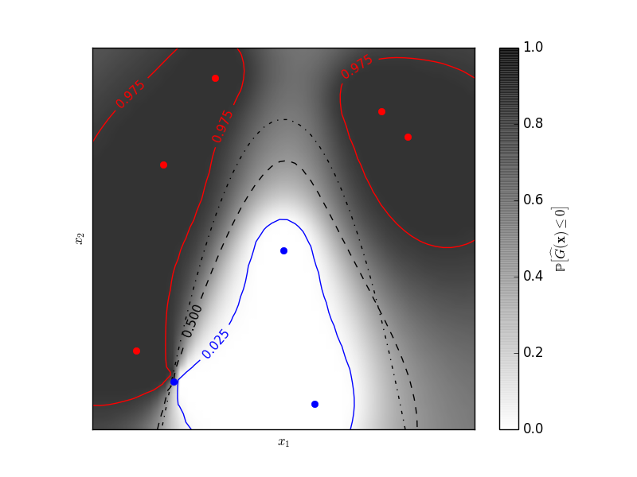

Gaussian Processes classification example: exploiting the probabilistic output¶
A two-dimensional regression exercise with a post-processing allowing for probabilistic classification thanks to the Gaussian property of the prediction.
The figure illustrates the probability that the prediction is negative with respect to the remaining uncertainty in the prediction. The red and blue lines corresponds to the 95% confidence interval on the prediction of the zero level set.
Python source code: plot_gp_probabilistic_classification_after_regression.py
print(__doc__)
# Author: Vincent Dubourg <vincent.dubourg@gmail.com>
# Licence: BSD 3 clause
import numpy as np
from scipy import stats
from sklearn.gaussian_process import GaussianProcess
from matplotlib import pyplot as pl
from matplotlib import cm
# Standard normal distribution functions
phi = stats.distributions.norm().pdf
PHI = stats.distributions.norm().cdf
PHIinv = stats.distributions.norm().ppf
# A few constants
lim = 8
def g(x):
"""The function to predict (classification will then consist in predicting
whether g(x) <= 0 or not)"""
return 5. - x[:, 1] - .5 * x[:, 0] ** 2.
# Design of experiments
X = np.array([[-4.61611719, -6.00099547],
[4.10469096, 5.32782448],
[0.00000000, -0.50000000],
[-6.17289014, -4.6984743],
[1.3109306, -6.93271427],
[-5.03823144, 3.10584743],
[-2.87600388, 6.74310541],
[5.21301203, 4.26386883]])
# Observations
y = g(X)
# Instanciate and fit Gaussian Process Model
gp = GaussianProcess(theta0=5e-1)
# Don't perform MLE or you'll get a perfect prediction for this simple example!
gp.fit(X, y)
# Evaluate real function, the prediction and its MSE on a grid
res = 50
x1, x2 = np.meshgrid(np.linspace(- lim, lim, res),
np.linspace(- lim, lim, res))
xx = np.vstack([x1.reshape(x1.size), x2.reshape(x2.size)]).T
y_true = g(xx)
y_pred, MSE = gp.predict(xx, eval_MSE=True)
sigma = np.sqrt(MSE)
y_true = y_true.reshape((res, res))
y_pred = y_pred.reshape((res, res))
sigma = sigma.reshape((res, res))
k = PHIinv(.975)
# Plot the probabilistic classification iso-values using the Gaussian property
# of the prediction
fig = pl.figure(1)
ax = fig.add_subplot(111)
ax.axes.set_aspect('equal')
pl.xticks([])
pl.yticks([])
ax.set_xticklabels([])
ax.set_yticklabels([])
pl.xlabel('$x_1$')
pl.ylabel('$x_2$')
cax = pl.imshow(np.flipud(PHI(- y_pred / sigma)), cmap=cm.gray_r, alpha=0.8,
extent=(- lim, lim, - lim, lim))
norm = pl.matplotlib.colors.Normalize(vmin=0., vmax=0.9)
cb = pl.colorbar(cax, ticks=[0., 0.2, 0.4, 0.6, 0.8, 1.], norm=norm)
cb.set_label('${\\rm \mathbb{P}}\left[\widehat{G}(\mathbf{x}) \leq 0\\right]$')
pl.plot(X[y <= 0, 0], X[y <= 0, 1], 'r.', markersize=12)
pl.plot(X[y > 0, 0], X[y > 0, 1], 'b.', markersize=12)
cs = pl.contour(x1, x2, y_true, [0.], colors='k', linestyles='dashdot')
cs = pl.contour(x1, x2, PHI(- y_pred / sigma), [0.025], colors='b',
linestyles='solid')
pl.clabel(cs, fontsize=11)
cs = pl.contour(x1, x2, PHI(- y_pred / sigma), [0.5], colors='k',
linestyles='dashed')
pl.clabel(cs, fontsize=11)
cs = pl.contour(x1, x2, PHI(- y_pred / sigma), [0.975], colors='r',
linestyles='solid')
pl.clabel(cs, fontsize=11)
pl.show()
Total running time of the example: 0.13 seconds ( 0 minutes 0.13 seconds)